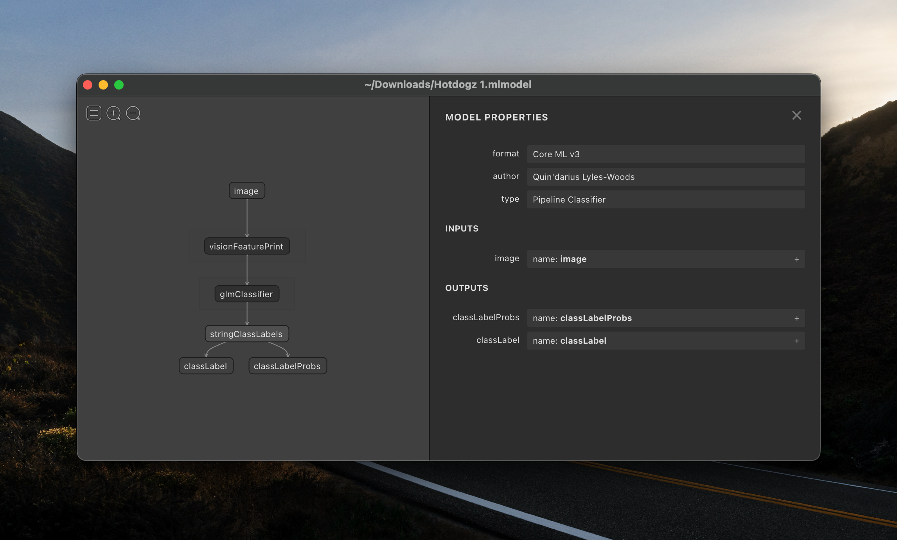
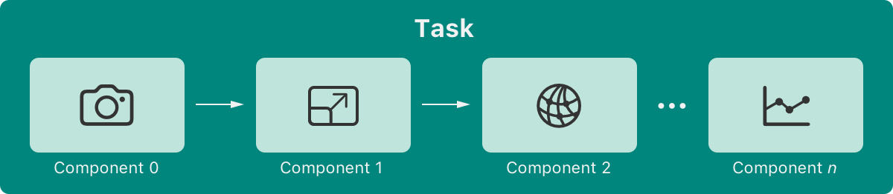
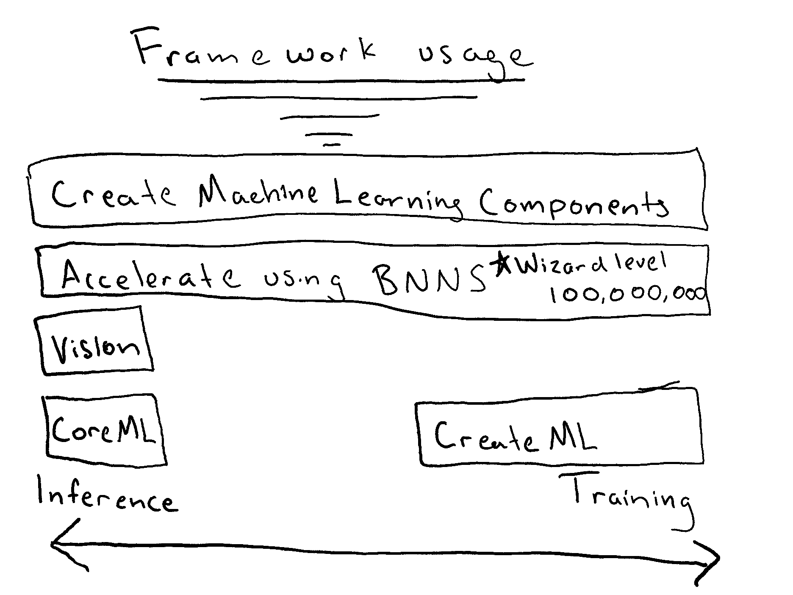

Whats New in CoreML
Introduction
Hello, my name is Quindarius Lyles-Woods and I am going to talk to you all about what's new in CoreML, Apples Machine Learning Toolkit.
I am employed at Rekor, a company building intelligent infrastructure for cites and municipalities, working on their mobile application.
Typically, outside of work,
I am building things around the house,
learning to play the piano,
loving on the 13 12 cats and 3 dogs in my house,
or simply caught with a beer or a book.
Otherwise in my spare time I will am building API's and taking Domains,
only half joking.
My history with machine learning did not start at with Apple's CoreML Framework, but I wish it did.
My first time building intelligent agents was in my Artificial Intelligence class where, hold your breath, I built most of my agents in Javascript as web applications. Okay maybe that was as ground shattering of a thought as I think or thought it was. I would build applications that would do semi-intelligent things and run in the browser I thought that was kinda neat. After this course I took NLP, Natural Language Processing, where I learned tons more about Machine Learning. Eventually making a pretty great model for classification of bodies of political text. Later on my partner and I were invited to present the process of data collection and model creation at the National Council on Undergraduate Research.
*fast forward* to NOW
Now I am taking what I have learned and am learning into a practical arena at my job. Being a Machine Vision, a subset of machine learning, application there is always for something for you to improve on because. Technically, the model result is never 100% accurate, so the work never ends.
Overview of CoreML
CoreML is a framework that helps you use models to make predictions. Okay great, talks over. Just kidding, while that is a simple answer there are many things to explain even within that one sentence. Like what is a model, how does it make a predications, or how does it help me do these things?
What is a (ML)model and how does it work?
A (ML)model has all the functions for doings predictions, can give you your descriptions, and also configuration. I have not told you what a model is yet per-say, I have told you what a model does and some of its properties. That's not really helpful is it? Okay enough being coy. When I was creating this talk, I thought I was going to give everyone a basically walk through of implementing machine learning in an application. Alas, like all good startups I pivoted to a way better idea, and the scraps are going to be useful. My groundbreaking idea for the previous talks was so groundbreaking that Silicon Valley, the TV show, stole it from me. A model that predicts a Hotdog, or you guessed it (Not)Hotdog. Oh yes I was going to show you what's is a (ML)model.

Way more appealing that what's really in Hotdogs,
in my opinion.
What you are looking at is an algorithm or a function that takes in an image and outputs the class label and the class probability.
You might still have questions and that's understandable,
like how to we go from image to hotdog or not a hotdog?
In this particalary example, inside the (ML)model's algorithm or function it has something called a glmClassifier,
or a General Linear Model, not to be confused with a Generalized Linear Model, which has an aspect of non linearity and a case of horrible naming.
How it works
- Take in Image
- Apply weights, Array of floats to image.
-
Profit - Apply an activation fu nction, just squishes the number between 0 and 1
Simple enough? I have answered most of my self proffered questions but one. How does CoreML help you do these things?
CoreML Usage
CoreML helps you make predictions off your model by giving you an API to do so. Instead of you having to make your own function to run through the General Linear Model, CoreML gives us a way to do that. Kinda like not having to write an algorithm to come up with the log of a number. You could do it if you want, in fact the Accelerate framework along with its BNNS functions will help you with even those lower level task, but we are trying to predict hotdogs not solve linear algebra equations! Please be reasonable.
This is how easy CoreML makes it to use a Model.
let model = try ocr(configuration: MLModelConfiguration())
let image = UIImage(named: "hotdog")?.cgImage
do {
let feature = try model.prediction(input: hotdogInput(imagesWith: image!))
print(feature.classification)
}
It's really hard to get easier than that. But of course if you are handling some a steady stream with AVFoundations Camera outputing to its CXVPixel Buffer things start looking ugly.
Thankfully when we import CoreMLModels there is autogenerated code that makes makes working with the models that much easier!
But you now what is better than autogenerated code? Better API's in the first place! So now we get on to What's new in CoreML
What's new in CoreML
Alot.
Although there is a catch. While there is a lot new in CoreML its not under the same name so this whole talk is kind of a misnomer. Sorry not sorry. The real hero of this talk is CreateMLComponents. This is because CreateMLComponents basically wrap up the whole pipeline in one framework. Not only does it wrap up training and inference in one framework it does it a newer fashion than CoreML does. One the site for CreateMLComponents you will be greeted with this picture.
This is because CMLC is a framework for complex machine learning task, that do way more than one thing. which is probably true of more than some machine learning task. This framework provides a way to access the inputs of machine learning models with significantly less code. An example that lives close to me will be with creating a Machine Vision application. In apple's example they showcase how to do so with their Vision framework which is supposed to, I don't know make working with Vision and Machine Learning easier??!?!?!

Almost 300 SLOC OH BOY so slick.
But surely this has another function's besides opening up the camera and configuring outputs. If you are naive enough to believe that I can a flying car to sell ya. Setting up camera's involve a lot of error states traditional so its typically an involved task and after you do this you need to be able to get the output and use it in some functional way. This is what CMLC improves on.
Okay don't freak out, I know what you have just seen. You are looking at an AsyncSequence of Images that are could be processed in real time. Then you are displaying those images within the MainActor function assuring that it is thread safe. The frames per second is around 30 FPS with the high resolution. Of course the more intensive you task that you through within this pipeline you will have less performance out of your frames per second. I don't know about anyone else but this is a significantly clearer piece of code. Coming at around 30 SLOC that's almost a 10x improvement over the traditional Vision approach and you don't have to be Einstein to figure it out which is another plus.
CreateMLComponents doesn't stop there. The framework also has a Audio and File reader of the same capacity. In fact the API brought about 108 new Structs like the VideoReader with it, with numerous Protocols to make extension to them and enums to decode errors. This compared to CoreML isn't even fair. With CoreML there are about 4-5 classes and a handful of structs to play with. So when apple said that CMLC is powerful they meant it!
So if feel like we really got into the trees and can't see the forest anymore so lets back up.
Ah that's better, so what I am getting at is that this CMLC framework will allow for as they said, Create ML Components is a fundamental technology that exposes the underpinnings of monolithic tasks. You’re in full control and can create custom pipelines for greater flexibility.. And when they said pipelines they mean it. You are able to make machine learning models within the code. Train them there even continuously update their parameters in real time.
Conclusion for Now
Key takeaways from this talk are:
- Create Machine Learning Components Does more than just Training.
- Apple is challenging the way we think about machine learning models.
- Getting started with machine learning in an application is easier than ever.